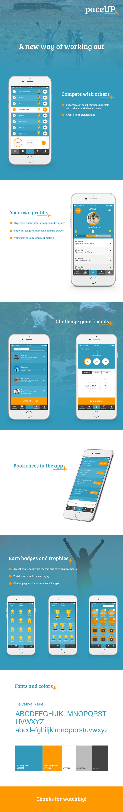

PACEUP
A gamified workout application for people that wants to compete despite favorite sport
Role
Concept, Design, Graphic Profile
Concept, Design, Graphic Profile
Client
Klassiska prestationer AB
Klassiska prestationer AB
Date
Mars 2016
Mars 2016
About the project
Paceup was born when two workout-freaks reached out to Hyper Island for help. Me and my team got the brief during the module Development 2, where we were suppose to get a bigger overview of app-development, from design to coded prototype. The clients wanted to develop a gamified workout app for recreational sports training and racing. The users should have the opportunity to compete with each other even if they don't practice the same sport. We developed the concept together with the clients, we had weekly meetings and a close contact. When the concept was done we split up in the team and two of us took the design part and the rest started to code. It was a fun project were I really learned how to work with an app from concept to finished design. The clients wanted a clickable prototype with a playfull design to show investors and they were really happy with the result.
Paceup was born when two workout-freaks reached out to Hyper Island for help. Me and my team got the brief during the module Development 2, where we were suppose to get a bigger overview of app-development, from design to coded prototype. The clients wanted to develop a gamified workout app for recreational sports training and racing. The users should have the opportunity to compete with each other even if they don't practice the same sport. We developed the concept together with the clients, we had weekly meetings and a close contact. When the concept was done we split up in the team and two of us took the design part and the rest started to code. It was a fun project were I really learned how to work with an app from concept to finished design. The clients wanted a clickable prototype with a playfull design to show investors and they were really happy with the result.
